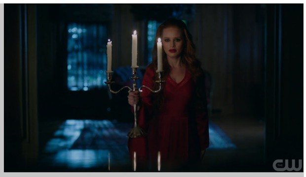

הוראות לנבחן:
1. משך הבחינה: שלוש שעות
2. מבנה השאלון ומפתח ההערכה:
חלק א'
40 נקודות
חלק ב'
40 נקודות
חלק ג'
20 נקודות
סה"כ 100 נקודות.
3. חומר עזר מותר לשימוש:
מחשבון.
4. פירוט החלקים:
חלק א : שאלות בתולדות הקולנוע. עונים על ארבע שאלות. כל שאלה 10 נקודות. סה"כ 40 נקודות.
חלק ב : שאלות בטכנולוגיות צילום, תאורה ואנימציה. עונים על ארבע שאלות. שאלה אחת טכנולוגיות, שתי שאלות מבימוי ושאלה אחת מאנימציה. כל שאלה 10 נקודות. סה"כ 40 נקודות.
חלק ג : שאלות מושגים. עונים על 2 מושגים. כל שאלה 5 נקודות. סה"כ 20 נקודות.
חלק א: דוגמאות לשאלות בתולדות הקולנוע
עונים על 4 שאלות. משקל כל שאלה 10 נקודות. סה"כ 40 נקודות.
- נתחו סצנה מהסרט "נאנוק איש הצפון" כדי לנמק את חשיבותו של הסרט כסרט תיעודי.
- נתחו שתי סצנות משני סרטים שונים של הגל החדש הצרפתי והדגימו דרכם את השפה הקולנועית הייחודית של במאי הגל החדש.
- בחרו סצנה מתוך הסרט "הקבינט של ד"ר קליגרי" כדי לתאר את מאפייני הזרם האקספרסיוניסטי.
- במה תרם הבמאי גריפית להתפתחות השפה הקולנועית? הביאו שלוש דוגמאות.
- הסבירו את המושג פורמליזם והביאו דוגמה מסרט שלמדתם.
- בסרטו של אינגמר ברגמן "פרסונה" יש ביטוי למושג מודרניזם. הביאו לכך שתי דוגמאות מהקטע שצפיתם בו.
- בסרטי האקספרסיוניזם הגרמני קיים מרכיב האימה והמתח. הביאו שלוש דוגמאות מתוך הסרטים שלמדתם לביטוי זה.
חלק ב': דוגמאות לשאלות בטכנולוגיות הפקה
עונים על 4 שאלות. משקל כל שאלה 10 נקודות. סה"כ 40 נקודות.
- אילו גורמים בצילום משפיעים על עומק שדה גדול בתמונה?
- האם התריס משפיע על עומק השדה?
-
אתם מצלמים את יהב ירדני מדברת למצלמה בגודל מדיום שוט בחוף הים, בחודש יולי, ב-12 בצהריים. הבמאית מבקשת עומק שדה קטן.
א. אילו פעולות יש לבצע במצלמה?
ב. התריס צריך להישאר במהירות 1/50. כיצד תבצעו פיצוי חשיפה בלי לשנות את עומק השדה?
-
אתם מצלמים את הפריים הבא:

א. מהי טמפרטורת הצבע של מקורות האור בתמונה? (שני מקורות).
ב. מדוע הרקע בתמונה נראה כחול?
-
א. מהם חלקי עדשת הזום (טבעות בגוף העדשה)?
ב. מה ההבדל בין עדשה קמורה לעדשה קעורה?
-
א. מהי אקוסטיקה?
ב. מהי סביבה סופגת ומהי סביבה מהדהדת? תנו דוגמאות לכל סביבה.
-
עליכם לצלם שוט בודד ובו אדם צועד ברחוב ונכנס לחדר מדרגות של בניין סמוך. אילו אתגרים צפויים לכם בצילום שוט כזה מבחינת צילום ואילו אתגרים מבחינת תאורה?
-
א. כתבו שלושה סוגי נורות וציינו את ההבדלים העיקריים בין הנורות.
ב. מה ההבדל בין אור רך לאור קשה?
שאלות בבימוי
- מהם השלבים שעל הבמאי לעבור בהכנת הצילומים לסרט?
- מהו לדעתכם התפקיד המרכזי של הבמאי ביצירת הסרט? נמקו והביאו דוגמאות מתוך סרטים שלמדתם.
שאלות באנימציה
- מה מייחד את סרט האנימציה מסרט עלילתי ריאליסטי מלבד הציור?
- מהם שלבי העבודה של האנימטור עד לסיום יצירתו?
- מהם הכלים הבסיסיים העומדים לרשות האנימטור? מנו לפחות חמישה.
חלק ג': דוגמאות לשאלות מושגים
עונים על שני מושגים. כל מושג 10 נקודות. סה"כ 20 נקודות.
- הסבירו את פעולת התריס במצלמה.
- הסבירו מהם שלבי ההפקה.
- כיצד נאפיין ז'אנר בקולנוע?
- על אילו תחומי הפקה משפיעה השפה הקולנועית שבוחר הבמאי? הביאו חמש דוגמאות.
- מהי ההגדרה של עבודת הבמאי בקולנוע?
- מהו תפקיד הפרספקטיבה בצילום? הביאו שתי דוגמאות.
- מה הקשר בין ציורי הרנסנס לצילום?
- הגדירו את ההבדל בין וידיאו אנלוגי לדיגיטלי. הביאו שלוש דוגמאות.
- מה ההבדל בין דולי לטראקינג שוט?
- הביאו שתי דוגמאות לשיקולי הצלם לבחירת קומפוזיציה.
בהצלחה!
את השאלות והמחוון לפתרון השאלות יש לשלוח למשרד החינוך לפיקוח עד לחודש דצמבר כל שנה.